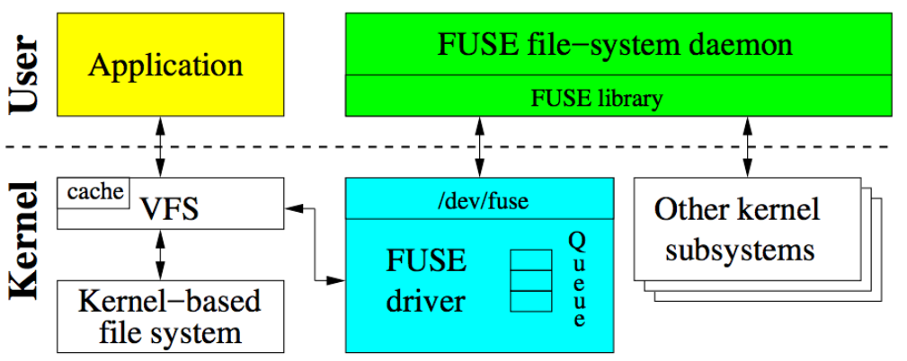
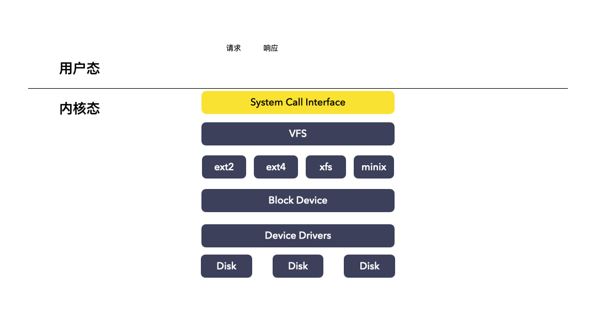
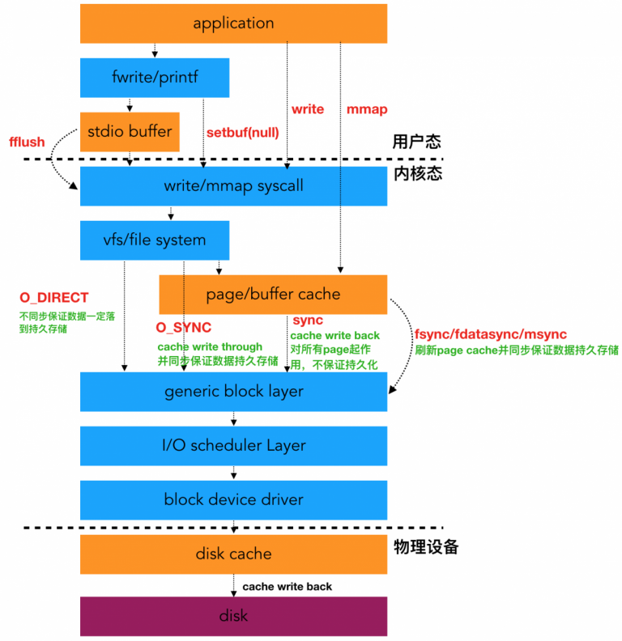
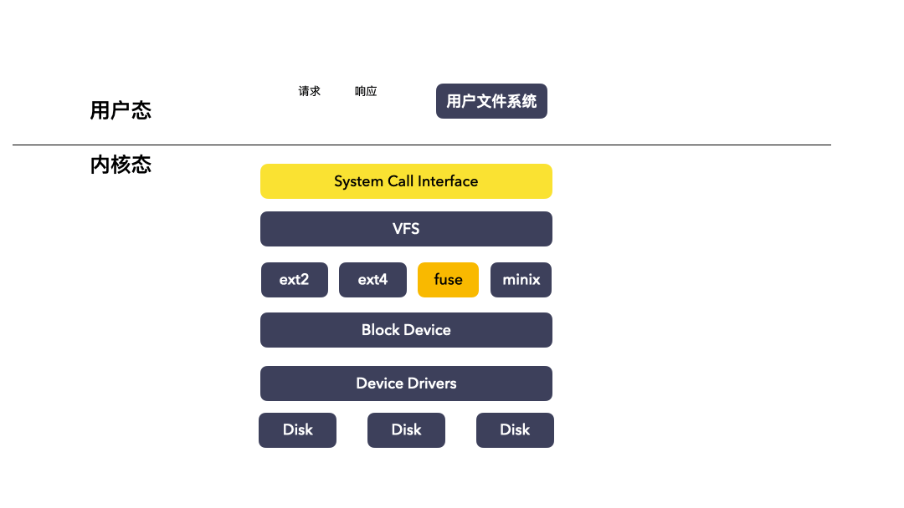
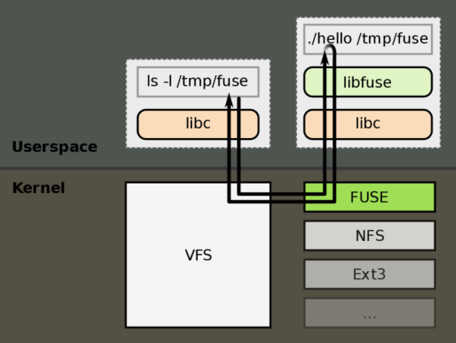
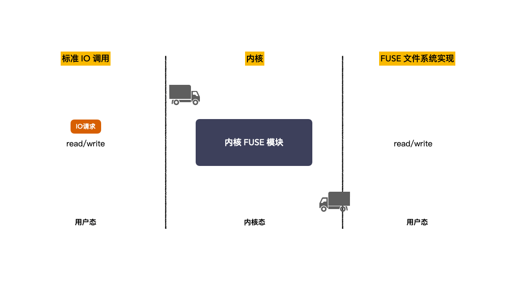

FUSE是什么
一、FUSE基本概念
1.1 FUSE 是什么
FUSE 是 Filesystem in Userspace 的缩写，也就是常说的用户态文件系统。
Linux内核官方文档对 FUSE 的解释如下：
What is FUSE?FUSE is a userspace filesystem framework. It consists of a kernel module (fuse.ko), a userspace library (libfuse.*) and a mount utility (fusermount).
即FUSE 是一个用户空间文件系统的框架，这套框架包含3个组件：
- 内核模块 fuse.ko ：用来接收VFS传递下来的IO请求，并且把这个IO封装之后通过管道发送到用户态；
- 用户态 lib 库 libfuse ：解析内核态转发出来的协议包，拆解成常规的 IO 请求；
- mount 工具 fusermount ；
这 3 个组件一起完成一件事：可以在用户态实现文件系统，并且让IO在内核态和用户态文件系统之间自由穿梭。
1.2 为什么需要FUSE
FUSE被称为用户空间文件系统，为什么要强调用户空间呢？接触过Linux内核的同学大概会知道，早期的文件系统开发只能在内核中。文件系统一般是实现在内核里面的，比如，Ext4、Fat32、NTFS(Kernel原生版)等常见的文件系统，其代码都在内核中，内核开发的难点在于调试和排查故障，而FUSE特殊之处就是，其文件系统的核心逻辑是在用户空间实现的。
有了FUSE之后，我们就可以在用户态空间实现文件系统。
优点：开发便捷，易于调试。安全性高，崩溃不会影响整个系统。
缺点：性能较低，会在用户态和内核态之间频繁切换，带来了性能开销。
1.2.1 内核态文件系统IO流程
早期的文件系统是位于内核之中， 处于VFS之下，块设备之上的一个位置。对上呈现文件存储实现，对下管理裸块设备。也就是说早期文件系统是内核的一个模块。那就可以理解了，内核模块的开发之所以艰难就是难在调试和排障，用户态的程序你可以随意 debug，出问题最多也就是 panic，coredump，内核态的程序出了问题就是宕机，所有现场都丢失，你只能通过日志，kdump 等手段来排查。
下图是没有FUSE的时候，IO经过内核文件系统的一个大概流程
比较详细的流程图

1.2.2 用户态文件系统IO流程
注意：图中简化了用户态之上的逻辑处理。
二、FUSE进阶
2.1 FUSE原理
首先看一眼 wiki 上有对 FUSE 的 ls -l /tmp/fuse 命令的演示图：

背景：一个用户态文件系统，挂载点为 /tmp/fuse ，用户二进制程序文件为 ./hello（该二进制程序可以理解为用户自己根据自身需求实现的文件系统）;
这个图的意思是：
- 当执行 ls -l /tmp/fuse 命令的时候，流程如下：
(1) IO 请求先进内核，经VFS传递给内核 FUSE 文件系统模块；
(2) 内核 FUSE 模块把请求发给到用户态，由 ./hello 程序接收并且处理。处理完成之后，响应原路返回；
简化的 IO 动画示意图：
通过这两张图，对 FUSE IO 的流程应该就清晰了，内核 FUSE 模块在内核态中间做协议封装和协议解析的工作，它接收从VFS下来的请求并按照 FUSE 协议转发到用户态，然后接收用户态的响应，并随后回复给用户。FUSE在这条IO路径是做了一个透明中转站的作用，用户完全不感知这套框架。我们把中间的 FUSE 当作一个黑盒遮住，就更容易理解了。
fuse.ko和libfuse库的作用：
这两个模块一个位于内核，一个位于用户态，是配套使用的，最核心的功能是协议封装和解析。
举个例子，内核 fuse.ko用于接收VFS下来的IO请求，然后封装成 FUSE 数据包，转发给用户态。这个时候，用户态文件系统收到这个 FUSE 数据包，它如果想要看懂这个数据包，就必须实现一套FUSE协议的代码，这套代码是公开透明的，属于FUSE框架的公共的代码，这种代码不需要让所有的用户文件系统都重复实现一遍，于是libfuse库就诞生了。
2.2 FUSE 协议格式
接下来我们看下FUSE数据传输的数据格式（FUSE协议的格式），请求包和响应包是什么样子的？
2.2.1 FUSE 请求
FUSE 请求包分为两部分：
- Header ： 这个是所有请求共用的，比如 open 请求，read 请求，write 请求，getxattr 请求，头部都至少有这个结构体，Header 结构体能描述整个 FUSE 请求，其中字段能区分请求类型；
- Payload ：这个东西是每个 IO 类型会是不同的，比如 read 请求就没这个，write 请求就有这个，因为 write 请求是携带数据的；
1 | struct fuse_in_header |
- Len: 是整个请求的字节数长度（Header + Payload）
- Opcode: 请求的类型，比如区分 open、read、write 等等；
- Unique: 请求唯一标识（和响应中要对应）
- Nodeid: 请求针对的文件 nodeid，目标文件或者文件夹的 nodeid；
- Uid: 文件/文件夹操作的进程的用户 ID
- Gid: 文件/文件夹操作的进程的用户组 ID
- Pid: 文件/文件夹操作的进程的进程 ID
2.2.2 FUSE响应
FUSE 响应包分为两部分：
Header ：这个结构体也是在数据头部的，所有 IO 类型的响应都至少有这个结构体。该结构体用于描述整个响应请求；
Payload ：每个请求的类型可能不同，比如 read 请求就会有这个，因为要携带 read 出来的用户数据，write 请求就不会有；
1
2
3
4
5
6struct fuse_out_header
{
uint32_t len; /* Total length of data written to the file descriptor */
int32_t error; /* Any error that occurred (0 if none) */
uint64_t unique; /* The value from the corresponding request */
};
- Len: 整个响应的字节数长度（ Header + Payload ）；
- Error: 响应错误码，成功返回 0，其他对应着系统的错误代码，负数；
- Unique: 对应者请求的唯一标识，和请求对应；
2.3 /dev/fuse
现在对数据协议的格式，转发和转运的模块我们也知道了。现在还差一个关键的点：数据包的通道，换句话说，内核模块的“包裹”发到哪里？用户程序又从哪里读取拿到这个“包裹”。
答案是：/dev/fuse ，这个虚设备文件就是内核模块和用户程序的桥梁。
这样一切都顺理成章了，整个过程中，用户的IO通过正常的系统调用进来，走到内核文件系统FUSE，FUSE文件系统把这个IO请求按照FUSE协议封装起来，打包成特定的格式，通过 /dev/fuse 这个管道传递到用户态。在此之前有守护进程监听这个管道，看到有消息出来之后，立马读出来，然后利用libfuse库解析协议，之后就是用户文件系统的代码逻辑了。
该过程示意图如下（省略了拆解包的步骤）：
三、 FUSE 的使用
- 检查内核是否支持，即是否有fuse.ko 内核模块。可运行下列命令检查，如果不报错则表示内核支持并且已经加载。
1 | [root@develop ~]# modprobe fuse |
- 挂载FUSE内核文件系统，便于管理
FUSE这个内核文件系统其实是可以挂载，也可以不挂载，挂载了主要是方便管理多个用户系统而已，FUSE内核文件系统的 Type 名称为 fusectl，挂载命令：
1 | [root@develop ~]# mount -t fusectl none /sys/fs/fuse/connections |
可以用 df -aT 命令查看：
1 | [root@develop ~]# df -aT|grep -i fuse |
通过挂载内核 fuse 文件系统，可以看到所有实现的用户文件系统，如下：
1 | [root@develop ~]# ls -l /sys/fs/fuse/connections |
在 /sys/fs/fuse/connections 对应两个目录，目录名为 Unique ID，能够唯一标识一个用户文件系统。这里表示内核 fuse 模块通过 /dev/fuse 设备文件，建立了两个通信管道，分别对应了两个用户文件系统，可以在用 df -aT 对照确认：
1 | [root@develop ~]# df -aT|grep -i fuse |
每个 Uniqe ID 名录下，有若干个文件，通过这些文件，我们可以获取到当前用户文件系统的状态，或跟 fuse 文件系统交互，比如：
1 | [root@develop ~]# ls -l /sys/fs/fuse/connections/36 |
- waiting 文件：cat 一下就能获取到当前正在处理的 IO 请求数；
- abort 文件：该文件写入任何字符串，都会终止这个用户文件系统和上面所有的请求；
- 挂载用户文件系统
1 | 用户态文件系统程序名 mountpoint [options] |
- 卸载用户文件系统
1 | fusermount -u mountpoint |
FUSE 的作用在于使用户能够绕开内核代码来编写文件系统，但是请注意，文件系统要实现对具体的设备的操作的话必须要使用设备驱动提供的接口，而设备驱动位于内核空间，这时可以直接读写块设备文件，就相当于只把文件系统摘到用户态，用户直接管理块设备空间。
参考
Linux内核官方FUSE介绍
FUSE 文件系统
FUSE(Filesystem in Userspace)